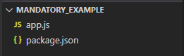
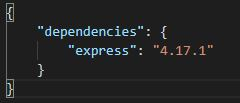
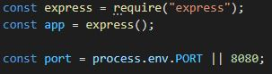
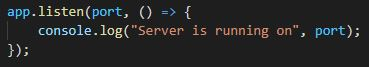

Download the latest version of Node at Download Node
After installation check if node has been installed on your computer
Open a terminal or powershell and type:
node -v
check if NPM has also been installed
npm -v
It is now time to start a new node project
Open your favourite code editor
For this tutorial Visual Studio Code will be used
You should create the following two files. These will be the main files to start a new express and nodeJS project
Inside the package.json file you will want to write the following:
This will be the file that NPM looks at when we run the command to install our dependencies
Go ahead and navigate to your project folder in the terminal or powershell, mine will be the following
cd .\Documents\GitHub\node_mandatory_one\
Now that you are in your project folder you want to run the NPM command to install dependencies
npm install
This will now quickly install the node modules needed to run an express application
Inside of your app.js file you will want to put the following code:
Note that the app.listen function is put at the bottom because node doesn't necessarily run in a synchronized order
You can now run your express app on port 8080. To run the app type the following into your terminal or powershell while in your project
node app.js